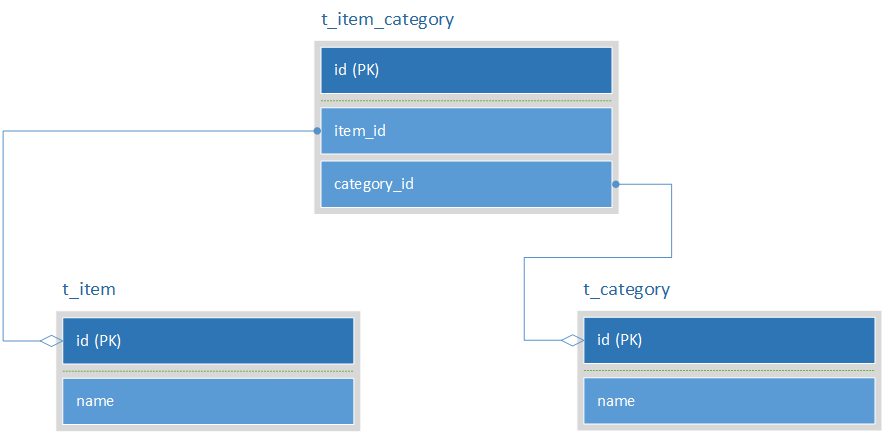
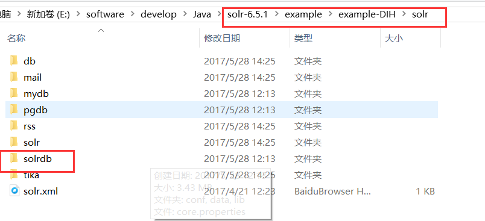
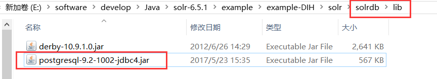
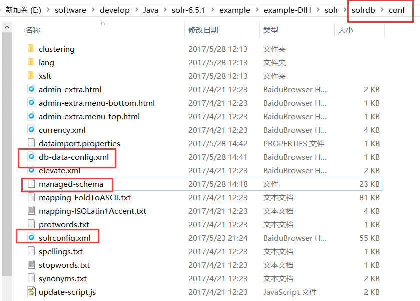
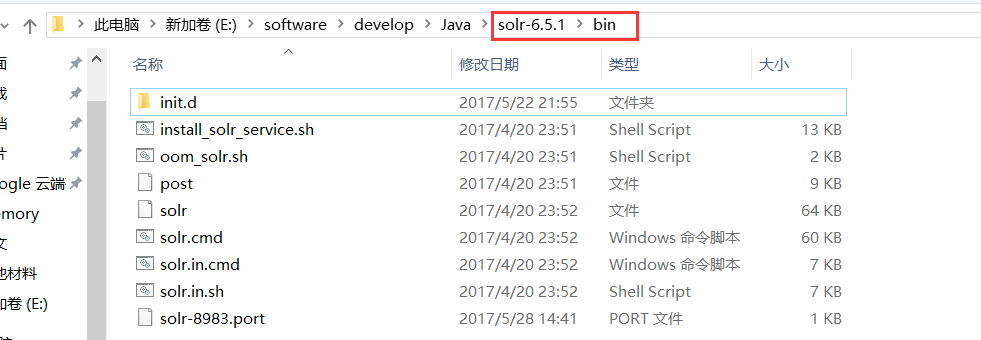
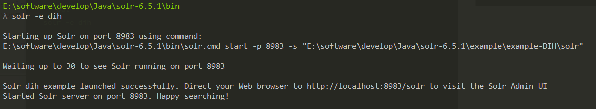
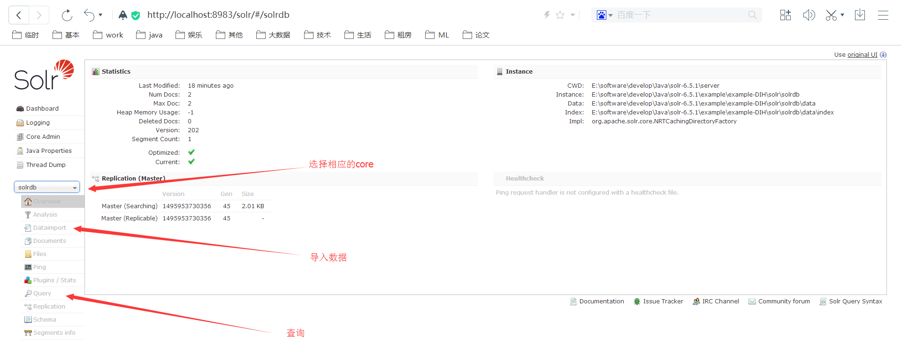
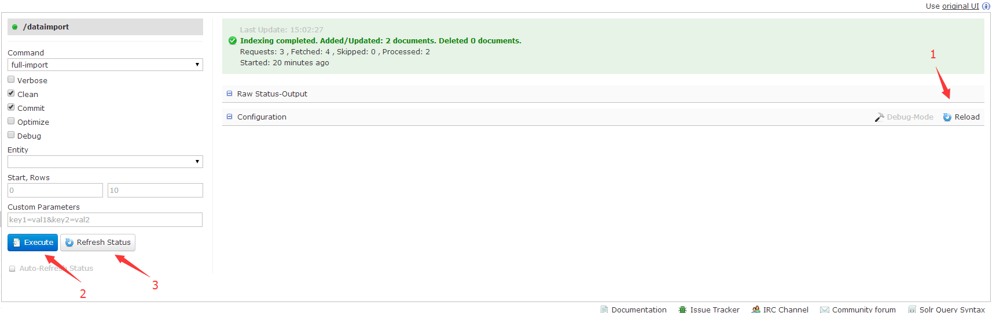
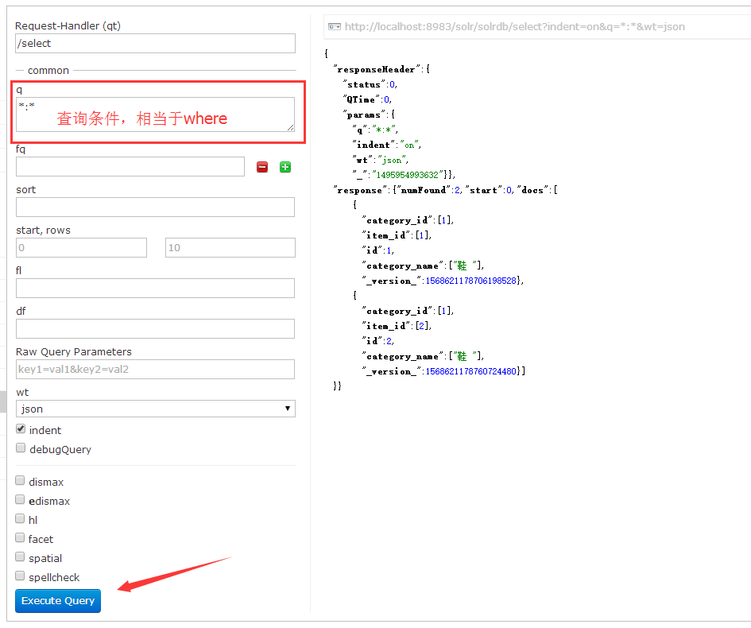

solr 可以从数据库中取出数据建立 index，这样就可以通过 solr 查询数据库中的数据了。
那么 solr 如何结合数据库使用？
Step 1：创建 database、table
创建 solrdb 数据库
创建自增序列
1
| create sequence serial_id increment by 1 minvalue 1 no maxvalue start with 1;
|
创建表
1
2
3
4
5
6
7
8
9
10
11
12
13
14
15
16
17
18
| create table t_item_category
(
id int8 not null primary key default nextval('serial_id'),
item_id int8,
category_id int8
);
create table t_item
(
id int8 not null primary key,
name varchar(256)
);
create table t_category
(
id int8 not null primary key,
name varchar(256)
);
|
插入数据
1
2
3
4
5
| insert into t_item_category(item_id, category_id) values(1, 1);
insert into t_item_category(item_id, category_id) values(2, 1);
insert into t_item values(1, 'Reebok GL 6000 ND');
insert into t_item values(2, 'Reebok AZTEC RETRO ');
insert into t_category values(1, '鞋 ');
|
postgresql表结构

Step 2：solr配置
在 solr\example\example-DIH\solr 拷贝一个文件夹，重命名（我这里是 solrdb）

把数据库与java连接的jar放入solrdb\lib中，我这里是 postgresql-9.2-1002-jdbc4.jar 包

进入 solrdb\conf ，修改 solrconfig.xml、db-data-config.xml、managed-schema 配置文件

solrconfig.xml 配置
找到
1
| <lib dir="${solr.install.dir:../../../..}/dist/" regex="solr-velocity-\d.*\.jar" />
|
在下面添加 postgresql-9.2-1002-jdbc4.jar 的引用
1
| <lib dir="C:/Users/hasee/Desktop/solr-6.5.1/solr-6.5.1/example/example-DIH/solr/pgdb/lib/" regex="postgresql-9.2-1002-jdbc4.jar"/>
|
db-data-config.xml 配置
数据库配置
1
2
3
4
5
6
7
8
9
10
11
12
13
14
15
16
17
18
19
20
| <dataConfig>
<dataSource type="JdbcDataSource"
driver="org.postgresql.Driver"
url="jdbc:postgresql://127.0.0.1/solrdb"
user="postgres"
encoding="UTF-8"
password="4005"/>
<document>
<entity name="tItemIdCategory" pk="id"
query="select id, item_id, category_id from t_item_category">
<field name="id" column="id"/>
<field name="item_id" column="item_id"/>
<field name="category_id" column="category_id"/>
<entity name="categoryName" query="select id, name from t_category where id='${tItemIdCategory.category_id}'">
<field name="category_name" column="name"/>
</entity>
</entity>
</document>
</dataConfig>
|
managed-schema 配置
公共部分，定义一些数据类型
1
2
3
4
5
6
7
8
9
10
11
12
13
14
15
16
17
18
19
20
21
22
23
24
25
26
27
28
29
30
31
32
33
34
35
36
37
38
39
40
41
42
43
44
45
46
47
48
49
50
51
52
53
54
55
56
57
58
59
60
61
62
63
64
65
66
67
68
69
70
71
72
73
74
75
76
77
78
79
80
81
82
83
84
85
86
87
88
89
90
91
92
93
94
95
96
97
98
99
100
101
102
103
104
105
106
107
108
109
110
111
112
113
114
115
116
117
118
119
120
121
122
123
124
125
126
127
128
129
130
131
132
133
134
135
136
137
138
139
140
141
142
143
144
145
146
147
148
149
150
151
152
153
154
155
156
157
158
159
160
161
162
163
164
165
166
167
168
169
170
171
172
173
174
175
176
177
178
179
180
181
182
183
184
185
186
187
188
189
190
191
192
193
194
195
196
197
198
199
200
201
202
203
204
205
206
207
208
209
210
211
212
213
214
215
216
217
218
219
220
221
222
223
224
225
226
227
228
229
230
231
232
233
234
235
236
237
238
239
240
241
242
243
244
245
246
247
248
249
250
251
252
253
254
255
256
257
258
259
260
261
262
263
264
265
266
267
268
269
270
271
272
273
274
275
276
277
278
279
280
281
282
283
284
285
286
287
288
289
290
291
292
293
294
295
296
297
298
299
300
301
302
303
304
305
306
307
308
309
310
311
312
313
314
315
316
317
318
319
320
321
322
323
324
325
326
327
328
329
330
331
332
333
334
335
336
337
338
339
340
341
342
343
344
345
346
347
348
349
350
351
352
353
354
355
356
357
358
359
360
361
362
363
364
365
366
367
368
369
370
371
372
373
374
375
376
377
378
379
380
381
382
383
384
385
386
387
388
389
390
391
392
393
394
395
396
397
398
399
400
401
402
403
404
405
406
407
408
409
410
411
412
|
<uniqueKey>id</uniqueKey>
<fieldType name="alphaOnlySort" class="solr.TextField" omitNorms="true" sortMissingLast="true">
<analyzer>
<tokenizer class="solr.KeywordTokenizerFactory"/>
<filter class="solr.LowerCaseFilterFactory"/>
<filter class="solr.TrimFilterFactory"/>
<filter class="solr.PatternReplaceFilterFactory" pattern="([^a-z])" replace="all" replacement=""/>
</analyzer>
</fieldType>
<fieldType name="ancestor_path" class="solr.TextField">
<analyzer type="index">
<tokenizer class="solr.KeywordTokenizerFactory"/>
</analyzer>
<analyzer type="query">
<tokenizer class="solr.PathHierarchyTokenizerFactory" delimiter="/"/>
</analyzer>
</fieldType>
<fieldType name="binary" class="solr.BinaryField"/>
<fieldType name="boolean" class="solr.BoolField" sortMissingLast="true"/>
<fieldType name="currency" class="solr.CurrencyField" currencyConfig="currency.xml" defaultCurrency="USD" precisionStep="8"/>
<fieldType name="date" class="solr.TrieDateField" positionIncrementGap="0" precisionStep="0"/>
<fieldType name="descendent_path" class="solr.TextField">
<analyzer type="index">
<tokenizer class="solr.PathHierarchyTokenizerFactory" delimiter="/"/>
</analyzer>
<analyzer type="query">
<tokenizer class="solr.KeywordTokenizerFactory"/>
</analyzer>
</fieldType>
<fieldType name="double" class="solr.TrieDoubleField" positionIncrementGap="0" precisionStep="0"/>
<fieldType name="float" class="solr.TrieFloatField" positionIncrementGap="0" precisionStep="0"/>
<fieldType name="ignored" class="solr.StrField" indexed="false" stored="false" multiValued="true"/>
<fieldType name="int" class="solr.TrieIntField" positionIncrementGap="0" precisionStep="0"/>
<fieldType name="location" class="solr.LatLonType" subFieldSuffix="_coordinate"/>
<fieldType name="location_rpt" class="solr.SpatialRecursivePrefixTreeFieldType" geo="true" maxDistErr="0.001" distErrPct="0.025" distanceUnits="kilometers"/>
<fieldType name="long" class="solr.TrieLongField" positionIncrementGap="0" precisionStep="0"/>
<fieldType name="lowercase" class="solr.TextField" positionIncrementGap="100">
<analyzer>
<tokenizer class="solr.KeywordTokenizerFactory"/>
<filter class="solr.LowerCaseFilterFactory"/>
</analyzer>
</fieldType>
<fieldType name="payloads" class="solr.TextField" indexed="true" stored="false">
<analyzer>
<tokenizer class="solr.WhitespaceTokenizerFactory"/>
<filter class="solr.DelimitedPayloadTokenFilterFactory" encoder="float"/>
</analyzer>
</fieldType>
<fieldType name="phonetic" class="solr.TextField" indexed="true" stored="false">
<analyzer>
<tokenizer class="solr.StandardTokenizerFactory"/>
<filter class="solr.DoubleMetaphoneFilterFactory" inject="false"/>
</analyzer>
</fieldType>
<fieldType name="point" class="solr.PointType" subFieldSuffix="_d" dimension="2"/>
<fieldType name="random" class="solr.RandomSortField" indexed="true"/>
<fieldType name="string" class="solr.StrField" sortMissingLast="true"/>
<fieldType name="tdate" class="solr.TrieDateField" positionIncrementGap="0" precisionStep="6"/>
<fieldType name="tdouble" class="solr.TrieDoubleField" positionIncrementGap="0" precisionStep="8"/>
<fieldType name="text_ar" class="solr.TextField" positionIncrementGap="100">
<analyzer>
<tokenizer class="solr.StandardTokenizerFactory"/>
<filter class="solr.LowerCaseFilterFactory"/>
<filter class="solr.StopFilterFactory" words="lang/stopwords_ar.txt" ignoreCase="true"/>
<filter class="solr.ArabicNormalizationFilterFactory"/>
<filter class="solr.ArabicStemFilterFactory"/>
</analyzer>
</fieldType>
<fieldType name="text_bg" class="solr.TextField" positionIncrementGap="100">
<analyzer>
<tokenizer class="solr.StandardTokenizerFactory"/>
<filter class="solr.LowerCaseFilterFactory"/>
<filter class="solr.StopFilterFactory" words="lang/stopwords_bg.txt" ignoreCase="true"/>
<filter class="solr.BulgarianStemFilterFactory"/>
</analyzer>
</fieldType>
<fieldType name="text_ca" class="solr.TextField" positionIncrementGap="100">
<analyzer>
<tokenizer class="solr.StandardTokenizerFactory"/>
<filter class="solr.ElisionFilterFactory" articles="lang/contractions_ca.txt" ignoreCase="true"/>
<filter class="solr.LowerCaseFilterFactory"/>
<filter class="solr.StopFilterFactory" words="lang/stopwords_ca.txt" ignoreCase="true"/>
<filter class="solr.SnowballPorterFilterFactory" language="Catalan"/>
</analyzer>
</fieldType>
<fieldType name="text_cjk" class="solr.TextField" positionIncrementGap="100">
<analyzer>
<tokenizer class="solr.StandardTokenizerFactory"/>
<filter class="solr.CJKWidthFilterFactory"/>
<filter class="solr.LowerCaseFilterFactory"/>
<filter class="solr.CJKBigramFilterFactory"/>
</analyzer>
</fieldType>
<fieldType name="text_ckb" class="solr.TextField" positionIncrementGap="100">
<analyzer>
<tokenizer class="solr.StandardTokenizerFactory"/>
<filter class="solr.SoraniNormalizationFilterFactory"/>
<filter class="solr.LowerCaseFilterFactory"/>
<filter class="solr.StopFilterFactory" words="lang/stopwords_ckb.txt" ignoreCase="true"/>
<filter class="solr.SoraniStemFilterFactory"/>
</analyzer>
</fieldType>
<fieldType name="text_cz" class="solr.TextField" positionIncrementGap="100">
<analyzer>
<tokenizer class="solr.StandardTokenizerFactory"/>
<filter class="solr.LowerCaseFilterFactory"/>
<filter class="solr.StopFilterFactory" words="lang/stopwords_cz.txt" ignoreCase="true"/>
<filter class="solr.CzechStemFilterFactory"/>
</analyzer>
</fieldType>
<fieldType name="text_da" class="solr.TextField" positionIncrementGap="100">
<analyzer>
<tokenizer class="solr.StandardTokenizerFactory"/>
<filter class="solr.LowerCaseFilterFactory"/>
<filter class="solr.StopFilterFactory" format="snowball" words="lang/stopwords_da.txt" ignoreCase="true"/>
<filter class="solr.SnowballPorterFilterFactory" language="Danish"/>
</analyzer>
</fieldType>
<fieldType name="text_de" class="solr.TextField" positionIncrementGap="100">
<analyzer>
<tokenizer class="solr.StandardTokenizerFactory"/>
<filter class="solr.LowerCaseFilterFactory"/>
<filter class="solr.StopFilterFactory" format="snowball" words="lang/stopwords_de.txt" ignoreCase="true"/>
<filter class="solr.GermanNormalizationFilterFactory"/>
<filter class="solr.GermanLightStemFilterFactory"/>
</analyzer>
</fieldType>
<fieldType name="text_el" class="solr.TextField" positionIncrementGap="100">
<analyzer>
<tokenizer class="solr.StandardTokenizerFactory"/>
<filter class="solr.GreekLowerCaseFilterFactory"/>
<filter class="solr.StopFilterFactory" words="lang/stopwords_el.txt" ignoreCase="false"/>
<filter class="solr.GreekStemFilterFactory"/>
</analyzer>
</fieldType>
<fieldType name="text_en" class="solr.TextField" positionIncrementGap="100">
<analyzer type="index">
<tokenizer class="solr.StandardTokenizerFactory"/>
<filter class="solr.StopFilterFactory" words="lang/stopwords_en.txt" ignoreCase="true"/>
<filter class="solr.LowerCaseFilterFactory"/>
<filter class="solr.EnglishPossessiveFilterFactory"/>
<filter class="solr.KeywordMarkerFilterFactory" protected="protwords.txt"/>
<filter class="solr.PorterStemFilterFactory"/>
</analyzer>
<analyzer type="query">
<tokenizer class="solr.StandardTokenizerFactory"/>
<filter class="solr.SynonymFilterFactory" expand="true" ignoreCase="true" synonyms="synonyms.txt"/>
<filter class="solr.StopFilterFactory" words="lang/stopwords_en.txt" ignoreCase="true"/>
<filter class="solr.LowerCaseFilterFactory"/>
<filter class="solr.EnglishPossessiveFilterFactory"/>
<filter class="solr.KeywordMarkerFilterFactory" protected="protwords.txt"/>
<filter class="solr.PorterStemFilterFactory"/>
</analyzer>
</fieldType>
<fieldType name="text_en_splitting" class="solr.TextField" autoGeneratePhraseQueries="true" positionIncrementGap="100">
<analyzer type="index">
<tokenizer class="solr.WhitespaceTokenizerFactory"/>
<filter class="solr.StopFilterFactory" words="lang/stopwords_en.txt" ignoreCase="true"/>
<filter class="solr.WordDelimiterFilterFactory" catenateNumbers="1" generateNumberParts="1" splitOnCaseChange="1" generateWordParts="1" catenateAll="0" catenateWords="1"/>
<filter class="solr.LowerCaseFilterFactory"/>
<filter class="solr.KeywordMarkerFilterFactory" protected="protwords.txt"/>
<filter class="solr.PorterStemFilterFactory"/>
</analyzer>
<analyzer type="query">
<tokenizer class="solr.WhitespaceTokenizerFactory"/>
<filter class="solr.SynonymFilterFactory" expand="true" ignoreCase="true" synonyms="synonyms.txt"/>
<filter class="solr.StopFilterFactory" words="lang/stopwords_en.txt" ignoreCase="true"/>
<filter class="solr.WordDelimiterFilterFactory" catenateNumbers="0" generateNumberParts="1" splitOnCaseChange="1" generateWordParts="1" catenateAll="0" catenateWords="0"/>
<filter class="solr.LowerCaseFilterFactory"/>
<filter class="solr.KeywordMarkerFilterFactory" protected="protwords.txt"/>
<filter class="solr.PorterStemFilterFactory"/>
</analyzer>
</fieldType>
<fieldType name="text_en_splitting_tight" class="solr.TextField" autoGeneratePhraseQueries="true" positionIncrementGap="100">
<analyzer>
<tokenizer class="solr.WhitespaceTokenizerFactory"/>
<filter class="solr.SynonymFilterFactory" expand="false" ignoreCase="true" synonyms="synonyms.txt"/>
<filter class="solr.StopFilterFactory" words="lang/stopwords_en.txt" ignoreCase="true"/>
<filter class="solr.WordDelimiterFilterFactory" catenateNumbers="1" generateNumberParts="0" generateWordParts="0" catenateAll="0" catenateWords="1"/>
<filter class="solr.LowerCaseFilterFactory"/>
<filter class="solr.KeywordMarkerFilterFactory" protected="protwords.txt"/>
<filter class="solr.EnglishMinimalStemFilterFactory"/>
<filter class="solr.RemoveDuplicatesTokenFilterFactory"/>
</analyzer>
</fieldType>
<fieldType name="text_es" class="solr.TextField" positionIncrementGap="100">
<analyzer>
<tokenizer class="solr.StandardTokenizerFactory"/>
<filter class="solr.LowerCaseFilterFactory"/>
<filter class="solr.StopFilterFactory" format="snowball" words="lang/stopwords_es.txt" ignoreCase="true"/>
<filter class="solr.SpanishLightStemFilterFactory"/>
</analyzer>
</fieldType>
<fieldType name="text_eu" class="solr.TextField" positionIncrementGap="100">
<analyzer>
<tokenizer class="solr.StandardTokenizerFactory"/>
<filter class="solr.LowerCaseFilterFactory"/>
<filter class="solr.StopFilterFactory" words="lang/stopwords_eu.txt" ignoreCase="true"/>
<filter class="solr.SnowballPorterFilterFactory" language="Basque"/>
</analyzer>
</fieldType>
<fieldType name="text_fa" class="solr.TextField" positionIncrementGap="100">
<analyzer>
<charFilter class="solr.PersianCharFilterFactory"/>
<tokenizer class="solr.StandardTokenizerFactory"/>
<filter class="solr.LowerCaseFilterFactory"/>
<filter class="solr.ArabicNormalizationFilterFactory"/>
<filter class="solr.PersianNormalizationFilterFactory"/>
<filter class="solr.StopFilterFactory" words="lang/stopwords_fa.txt" ignoreCase="true"/>
</analyzer>
</fieldType>
<fieldType name="text_fi" class="solr.TextField" positionIncrementGap="100">
<analyzer>
<tokenizer class="solr.StandardTokenizerFactory"/>
<filter class="solr.LowerCaseFilterFactory"/>
<filter class="solr.StopFilterFactory" format="snowball" words="lang/stopwords_fi.txt" ignoreCase="true"/>
<filter class="solr.SnowballPorterFilterFactory" language="Finnish"/>
</analyzer>
</fieldType>
<fieldType name="text_fr" class="solr.TextField" positionIncrementGap="100">
<analyzer>
<tokenizer class="solr.StandardTokenizerFactory"/>
<filter class="solr.ElisionFilterFactory" articles="lang/contractions_fr.txt" ignoreCase="true"/>
<filter class="solr.LowerCaseFilterFactory"/>
<filter class="solr.StopFilterFactory" format="snowball" words="lang/stopwords_fr.txt" ignoreCase="true"/>
<filter class="solr.FrenchLightStemFilterFactory"/>
</analyzer>
</fieldType>
<fieldType name="text_ga" class="solr.TextField" positionIncrementGap="100">
<analyzer>
<tokenizer class="solr.StandardTokenizerFactory"/>
<filter class="solr.ElisionFilterFactory" articles="lang/contractions_ga.txt" ignoreCase="true"/>
<filter class="solr.StopFilterFactory" words="lang/hyphenations_ga.txt" ignoreCase="true"/>
<filter class="solr.IrishLowerCaseFilterFactory"/>
<filter class="solr.StopFilterFactory" words="lang/stopwords_ga.txt" ignoreCase="true"/>
<filter class="solr.SnowballPorterFilterFactory" language="Irish"/>
</analyzer>
</fieldType>
<fieldType name="text_general" class="solr.TextField" positionIncrementGap="100">
<analyzer type="index">
<tokenizer class="solr.StandardTokenizerFactory"/>
<filter class="solr.StopFilterFactory" words="stopwords.txt" ignoreCase="true"/>
<filter class="solr.LowerCaseFilterFactory"/>
</analyzer>
<analyzer type="query">
<tokenizer class="solr.StandardTokenizerFactory"/>
<filter class="solr.StopFilterFactory" words="stopwords.txt" ignoreCase="true"/>
<filter class="solr.SynonymFilterFactory" expand="true" ignoreCase="true" synonyms="synonyms.txt"/>
<filter class="solr.LowerCaseFilterFactory"/>
</analyzer>
</fieldType>
<fieldType name="text_general_rev" class="solr.TextField" positionIncrementGap="100">
<analyzer type="index">
<tokenizer class="solr.StandardTokenizerFactory"/>
<filter class="solr.StopFilterFactory" words="stopwords.txt" ignoreCase="true"/>
<filter class="solr.LowerCaseFilterFactory"/>
<filter class="solr.ReversedWildcardFilterFactory" maxPosQuestion="2" maxFractionAsterisk="0.33" maxPosAsterisk="3" withOriginal="true"/>
</analyzer>
<analyzer type="query">
<tokenizer class="solr.StandardTokenizerFactory"/>
<filter class="solr.SynonymFilterFactory" expand="true" ignoreCase="true" synonyms="synonyms.txt"/>
<filter class="solr.StopFilterFactory" words="stopwords.txt" ignoreCase="true"/>
<filter class="solr.LowerCaseFilterFactory"/>
</analyzer>
</fieldType>
<fieldType name="text_gl" class="solr.TextField" positionIncrementGap="100">
<analyzer>
<tokenizer class="solr.StandardTokenizerFactory"/>
<filter class="solr.LowerCaseFilterFactory"/>
<filter class="solr.StopFilterFactory" words="lang/stopwords_gl.txt" ignoreCase="true"/>
<filter class="solr.GalicianStemFilterFactory"/>
</analyzer>
</fieldType>
<fieldType name="text_hi" class="solr.TextField" positionIncrementGap="100">
<analyzer>
<tokenizer class="solr.StandardTokenizerFactory"/>
<filter class="solr.LowerCaseFilterFactory"/>
<filter class="solr.IndicNormalizationFilterFactory"/>
<filter class="solr.HindiNormalizationFilterFactory"/>
<filter class="solr.StopFilterFactory" words="lang/stopwords_hi.txt" ignoreCase="true"/>
<filter class="solr.HindiStemFilterFactory"/>
</analyzer>
</fieldType>
<fieldType name="text_hu" class="solr.TextField" positionIncrementGap="100">
<analyzer>
<tokenizer class="solr.StandardTokenizerFactory"/>
<filter class="solr.LowerCaseFilterFactory"/>
<filter class="solr.StopFilterFactory" format="snowball" words="lang/stopwords_hu.txt" ignoreCase="true"/>
<filter class="solr.SnowballPorterFilterFactory" language="Hungarian"/>
</analyzer>
</fieldType>
<fieldType name="text_hy" class="solr.TextField" positionIncrementGap="100">
<analyzer>
<tokenizer class="solr.StandardTokenizerFactory"/>
<filter class="solr.LowerCaseFilterFactory"/>
<filter class="solr.StopFilterFactory" words="lang/stopwords_hy.txt" ignoreCase="true"/>
<filter class="solr.SnowballPorterFilterFactory" language="Armenian"/>
</analyzer>
</fieldType>
<fieldType name="text_id" class="solr.TextField" positionIncrementGap="100">
<analyzer>
<tokenizer class="solr.StandardTokenizerFactory"/>
<filter class="solr.LowerCaseFilterFactory"/>
<filter class="solr.StopFilterFactory" words="lang/stopwords_id.txt" ignoreCase="true"/>
<filter class="solr.IndonesianStemFilterFactory" stemDerivational="true"/>
</analyzer>
</fieldType>
<fieldType name="text_it" class="solr.TextField" positionIncrementGap="100">
<analyzer>
<tokenizer class="solr.StandardTokenizerFactory"/>
<filter class="solr.ElisionFilterFactory" articles="lang/contractions_it.txt" ignoreCase="true"/>
<filter class="solr.LowerCaseFilterFactory"/>
<filter class="solr.StopFilterFactory" format="snowball" words="lang/stopwords_it.txt" ignoreCase="true"/>
<filter class="solr.ItalianLightStemFilterFactory"/>
</analyzer>
</fieldType>
<fieldType name="text_ja" class="solr.TextField" autoGeneratePhraseQueries="false" positionIncrementGap="100">
<analyzer>
<tokenizer class="solr.JapaneseTokenizerFactory" mode="search"/>
<filter class="solr.JapaneseBaseFormFilterFactory"/>
<filter class="solr.JapanesePartOfSpeechStopFilterFactory" tags="lang/stoptags_ja.txt"/>
<filter class="solr.CJKWidthFilterFactory"/>
<filter class="solr.StopFilterFactory" words="lang/stopwords_ja.txt" ignoreCase="true"/>
<filter class="solr.JapaneseKatakanaStemFilterFactory" minimumLength="4"/>
<filter class="solr.LowerCaseFilterFactory"/>
</analyzer>
</fieldType>
<fieldType name="text_lv" class="solr.TextField" positionIncrementGap="100">
<analyzer>
<tokenizer class="solr.StandardTokenizerFactory"/>
<filter class="solr.LowerCaseFilterFactory"/>
<filter class="solr.StopFilterFactory" words="lang/stopwords_lv.txt" ignoreCase="true"/>
<filter class="solr.LatvianStemFilterFactory"/>
</analyzer>
</fieldType>
<fieldType name="text_nl" class="solr.TextField" positionIncrementGap="100">
<analyzer>
<tokenizer class="solr.StandardTokenizerFactory"/>
<filter class="solr.LowerCaseFilterFactory"/>
<filter class="solr.StopFilterFactory" format="snowball" words="lang/stopwords_nl.txt" ignoreCase="true"/>
<filter class="solr.StemmerOverrideFilterFactory" dictionary="lang/stemdict_nl.txt" ignoreCase="false"/>
<filter class="solr.SnowballPorterFilterFactory" language="Dutch"/>
</analyzer>
</fieldType>
<fieldType name="text_no" class="solr.TextField" positionIncrementGap="100">
<analyzer>
<tokenizer class="solr.StandardTokenizerFactory"/>
<filter class="solr.LowerCaseFilterFactory"/>
<filter class="solr.StopFilterFactory" format="snowball" words="lang/stopwords_no.txt" ignoreCase="true"/>
<filter class="solr.SnowballPorterFilterFactory" language="Norwegian"/>
</analyzer>
</fieldType>
<fieldType name="text_pt" class="solr.TextField" positionIncrementGap="100">
<analyzer>
<tokenizer class="solr.StandardTokenizerFactory"/>
<filter class="solr.LowerCaseFilterFactory"/>
<filter class="solr.StopFilterFactory" format="snowball" words="lang/stopwords_pt.txt" ignoreCase="true"/>
<filter class="solr.PortugueseLightStemFilterFactory"/>
</analyzer>
</fieldType>
<fieldType name="text_ro" class="solr.TextField" positionIncrementGap="100">
<analyzer>
<tokenizer class="solr.StandardTokenizerFactory"/>
<filter class="solr.LowerCaseFilterFactory"/>
<filter class="solr.StopFilterFactory" words="lang/stopwords_ro.txt" ignoreCase="true"/>
<filter class="solr.SnowballPorterFilterFactory" language="Romanian"/>
</analyzer>
</fieldType>
<fieldType name="text_ru" class="solr.TextField" positionIncrementGap="100">
<analyzer>
<tokenizer class="solr.StandardTokenizerFactory"/>
<filter class="solr.LowerCaseFilterFactory"/>
<filter class="solr.StopFilterFactory" format="snowball" words="lang/stopwords_ru.txt" ignoreCase="true"/>
<filter class="solr.SnowballPorterFilterFactory" language="Russian"/>
</analyzer>
</fieldType>
<fieldType name="text_sv" class="solr.TextField" positionIncrementGap="100">
<analyzer>
<tokenizer class="solr.StandardTokenizerFactory"/>
<filter class="solr.LowerCaseFilterFactory"/>
<filter class="solr.StopFilterFactory" format="snowball" words="lang/stopwords_sv.txt" ignoreCase="true"/>
<filter class="solr.SnowballPorterFilterFactory" language="Swedish"/>
</analyzer>
</fieldType>
<fieldType name="text_th" class="solr.TextField" positionIncrementGap="100">
<analyzer>
<tokenizer class="solr.ThaiTokenizerFactory"/>
<filter class="solr.LowerCaseFilterFactory"/>
<filter class="solr.StopFilterFactory" words="lang/stopwords_th.txt" ignoreCase="true"/>
</analyzer>
</fieldType>
<fieldType name="text_tr" class="solr.TextField" positionIncrementGap="100">
<analyzer>
<tokenizer class="solr.StandardTokenizerFactory"/>
<filter class="solr.ApostropheFilterFactory"/>
<filter class="solr.TurkishLowerCaseFilterFactory"/>
<filter class="solr.StopFilterFactory" words="lang/stopwords_tr.txt" ignoreCase="false"/>
<filter class="solr.SnowballPorterFilterFactory" language="Turkish"/>
</analyzer>
</fieldType>
<fieldType name="text_ws" class="solr.TextField" positionIncrementGap="100">
<analyzer>
<tokenizer class="solr.WhitespaceTokenizerFactory"/>
</analyzer>
</fieldType>
<fieldType name="tfloat" class="solr.TrieFloatField" positionIncrementGap="0" precisionStep="8"/>
<fieldType name="tint" class="solr.TrieIntField" positionIncrementGap="0" precisionStep="8"/>
<fieldType name="tlong" class="solr.TrieLongField" positionIncrementGap="0" precisionStep="8"/>
|
与数据库表对应的配置
1
2
3
4
5
6
7
8
9
10
11
12
13
14
|
multiValued:此字段是否可以存储多个值
indexed:在搜索时是否使用该字段来查询或排序
stored:是否将索引结果存储到索引库，如果选择false在solr的返回结果中将不会显示
required:提示solr是否添加没有这个字段的任何文档，默认为false
default:字段的默认值
-->
<field name="id" type="long" multiValued="false" indexed="true" required="true" stored="true"/>
<field name="item_id" type="long" multiValued="true" indexed="true" required="false" stored="true"/>
<field name="category_id" type="long" multiValued="true" indexed="true" required="false" stored="true"/>
<field name="category_name" type="string" multiValued="true" indexed="true" required="false" stored="true"/>
<field name="_version_" type="long" indexed="true" stored="true"/>
|
注意：db-data-config.xml 配置文件中的 field name 要和 managed-schema 中的 field name 对应
Step 3：启动 solr
进入 solr\bin 目录使用启动命令，启动 solr

启动成功

通过浏览器访问 solr
http://localhost:8983/solr/
Step 4：使用 solr

导入数据

查询数据

注意：查询条件的写法是 key:value 形式的
Step 5：关闭 solr
进入 solr\bin 目录使用关闭命令，关闭 solr